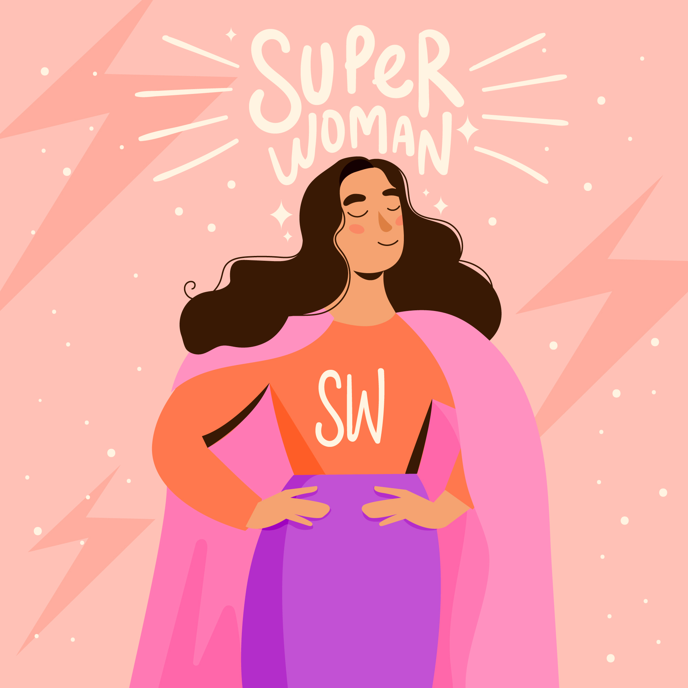

Фритрек и нулевой спринт: Подготовка к работе
</предвкушение>

Это было самое начало пути. На этом этапе важно было проникнуться основами и настроиться на учёбу. И, возможно, подумать, как новые знания могут повлиять на ваше будущее.
Все ново, интересно, на данном этапе была уверена в своих силах!